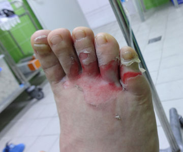
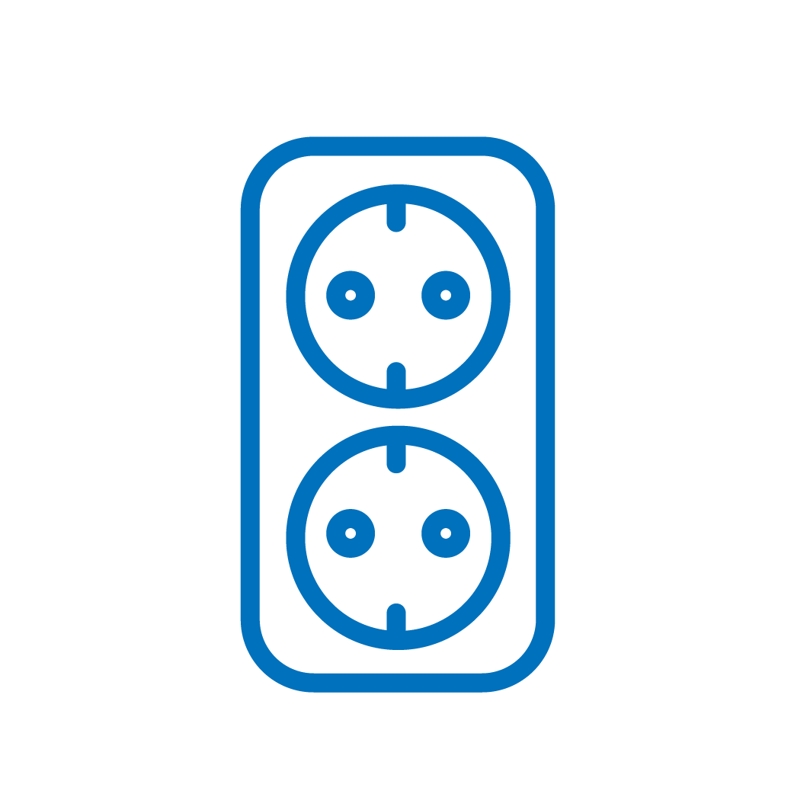

· 원인

· 특징
① 가정용 220v 에서도 중대한 화상이 발생 할 수 있으며, 전압이 높을수록 심한 화상을 유발 합니다.
② 주로 산업현장에서 성인에게 발생하지만, 영유아가 젓가락 등으로 콘센트를 건드려서 발생하는 경우도 많습니다. (영유아가 있는 집에서는 반드시 콘센트마개를 생활화 하여야 합니다.)
③ 전기가 피부를 통과하여 지나감으로 피부뿐만 아니라 근육, 인대, 뼈 등의 내부 장기손상을 동반하는 경우가 많습니다.
④ 감전시 피부를 통해 전기가 들어가는 곳과 나오는 곳이 있어 직접 전기를 만지지 않은 부위에서도 화상이 발생할 수 있습니다.
⑤ 전기화상의 경우에는 작은 부위라도 반드시 화상 전문의의 진료를 받아야 합니다.(심장이나 신장 등 내부 장기손상에 대한 확인이 필요합니다.)